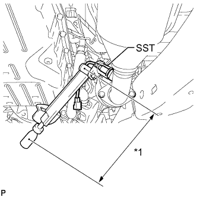
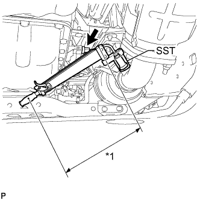

HEATED OXYGEN SENSOR > INSTALLATION |
| 1. INSTALL HEATED OXYGEN SENSOR (for Bank 2 Sensor 2) |
Temporarily install the sensor to the front exhaust pipe by hand.
|  |
Using SST, tighten the heated oxygen sensor.
| *1 | Fulcrum Length |
Attach the 2 clamps and connect the heated oxygen sensor connector.
| 2. INSTALL HEATED OXYGEN SENSOR (for Bank 1 Sensor 2) |
Temporarily install the sensor to the front No. 2 exhaust pipe by hand.
|  |
Using SST, tighten the heated oxygen sensor.
| *1 | Fulcrum Length |
Connect the heated oxygen sensor connector.
| 3. INSPECT FOR EXHAUST GAS LEAK |